Part1에 이어 이번에는 모벨로 스튜디오를 이용하여 실제 동작하게 될 화면을 디자인해 보겠습니다. 노트 리스트를 출력하기 위해 아래의 그림처럼 팔레트에서 Table컴포넌트를 활용하겠습니다.
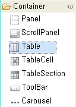
Table 컴포넌트를 가져와 Scene화면에 배치하면 다음과 같이 테이블 컴포넌트가 Scene 전체 영역을 차지하게 됩니다.
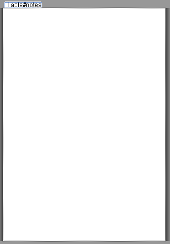
이제 테이블 속성에서 id를 "notes"로 하고 날자별로 Grouping해서 노트를 출력하므로 group 속성을 true로 설정하겠습니다. 컴포넌트의 id를 활용하면 Scene에서 해당 컴포넌트를 쉽게 찾아올 수 있습니다.
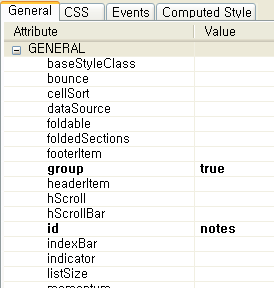
이제 노트 리스트 화면에서 사용자가 특정 노트를 선택할 때마다 노트 상세 정보를 출력하는 화면으로 이동하기 위해 다음과 같이 이벤트 핸들러를 등록합니다.
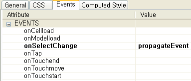
위의 그림은 노트 리스트에서 사용자가 특정 리스트를 선택할 때 마다 SceneController에 있는 propagateEvent라는 이벤트 핸들러가 수행됨을 나타냅니다. 노트 리스트 화면은 개별 노트를 리스트로 출력하지만 노트는 동적으로 생성되므로 디자인 단계에서는 화면에 나타나지 않습니다. 하지만 실제 구동시 테이블 컴포넌트에 리스트 항목이 정상적으로 출력되는 것을 확인할 수 있습니다.
마지막으로 Scene파일인 main.scene을 가독성을 높이기 위해 list.scene으로 이름을 변경하여 사용하겠습니다.
모벨로 스튜디오를 이용하면 위에서와 같은 방법으로 쉽고 간단하게 리스트 화면을 구성할 수 있습니다.
노트 리스트화면 생성과 동일한 방법으로 새로운 노트의 생성 및 수정을 위한 화면을 디자인 해 보겠습니다. 먼저 프로젝트 탐색기(Project Explorer)에서 write.scene이름으로 새로운 Scene파일을 생성합니다. 마우스로 지정한 위치에 Form 컴포넌트가 출력되도록 하기 위해 Panel컴포넌트를 Scene에 추가한 다음 이 Panel 컴포넌트의 레이아웃을 Absolute Layout으로 지정합니다.
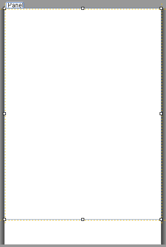 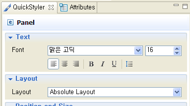
다음으로 Form 컴포넌트를 이용하여 다음 화면과 같이 디자인 합니다.
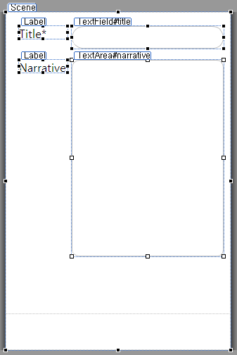
이때 노트 제목과 내용을 출력하기 위한 컴포넌트로 TextField와 TextArea컴포넌트를 활용하고 이들 컴포넌트의 id를 "title"과 "narrative"로 설정합니다. 마지막으로 다음 그림고 같이 화면 하단에 ToolBar컴포넌트를 활용하여 삭제(Trash) 버튼을 추가하겠습니다.
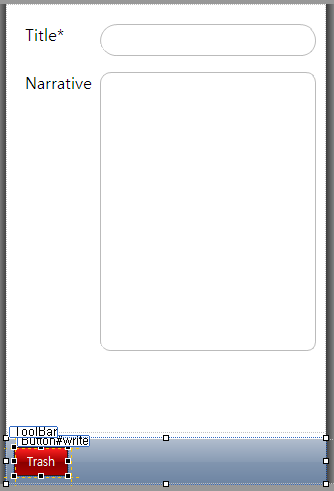
사용자가 Trash버튼의 id를 "write"로 설정하고 다음의 그림과 같이 스타일 및 이벤트 핸들러를 설정합니다.
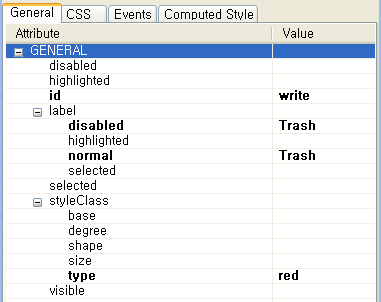
다음으로 Trash버튼을 오른쪽으로 이동하기 위해 다음 그림과 같이 Space 컴포넌틀를 활용하겠습니다.
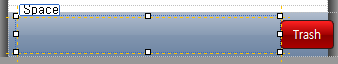
최종 디자인된 화면은 다음과 같습니다.
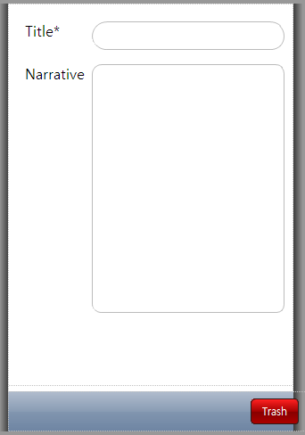
지금까지 노트 앱에 사용될 화면들을 모벨로 스튜디오를 통해 디자인 했습니다.
Part3에서는 작성된 노트를 저장하거나 저장된 노트를 불러오기 위해 모델을 구성하고, 버튼을 터치하거나 노트 리스트에서 특정 노트를 터치했을 때 화면 이동을 제어하거나 노트를 수정/삭제하기 위한 Controller 를 작성해 보도록 하겠습니다.